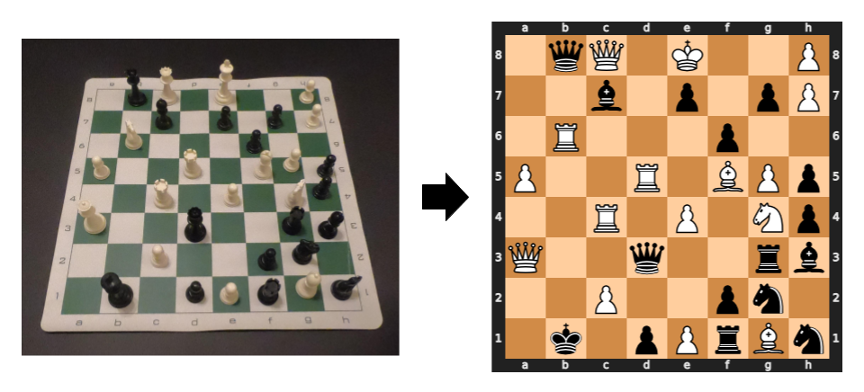

计算机视觉课程设计
有请下一组--国际象棋识别
项目介绍
中国海洋大学计算机视觉课程设计项目，旨在从单张图像识别国际象棋的棋盘布局。 项目采用混合策略，巧妙地结合了经典的计算机视觉技术（用于棋盘检测与校正）和现代深度学习技术（用于棋子分类），最终能够将识别结果输出为标准的霍桑-爱德华兹表示法 (FEN) 字符串。 ✨ 项目特色 混合视觉技术: 综合利用OpenCV进行棋盘的透视变换、边缘检测和网格线定位，然后使用深度学习模型进行高精度的棋子分类。 高精度模型: 基于在ImageNet上预训练的VGG16模型进行迁移学习，对13种类别（黑白双方各6种棋子 + 空格）进行分类，在测试集上取得了优异的性能。 鲁棒的棋盘检测: 采用了投影分割法来抵抗棋子轮廓对网格线检测的干扰，能够处理有一定角度的棋盘图像。 标准化输出: 识别结果被准确地转换为FEN字符串，可以直接用于各种象棋软件或与象棋引擎（如Stockfish）进行交互。 🛠️ 技术栈 编程语言: Python 深度学习: Keras, TensorFlow 计算机视觉: OpenCV, Pillow (PIL) 科学计算与数据处理: NumPy, Pandas, Scikit-learn, SciPy 可视化: Matplotlib, Seaborn 象棋逻辑与渲染: python-chess, svglib, reportlab

在线检测
国际象棋识别
©有请下一组